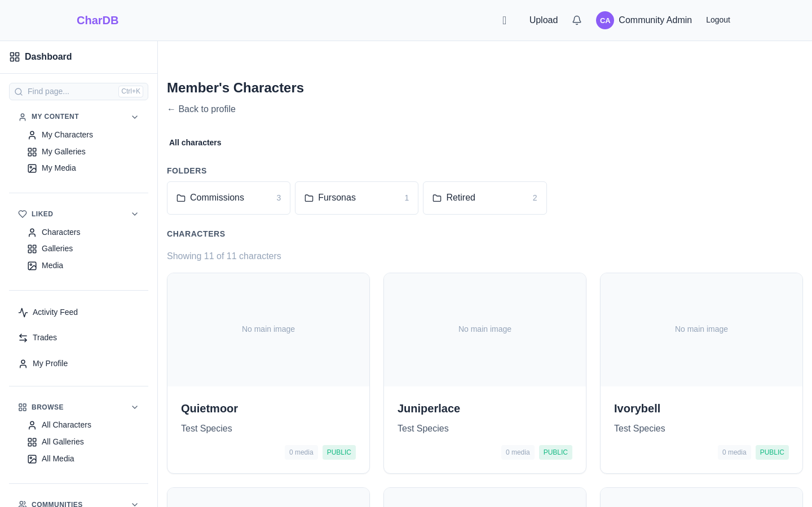
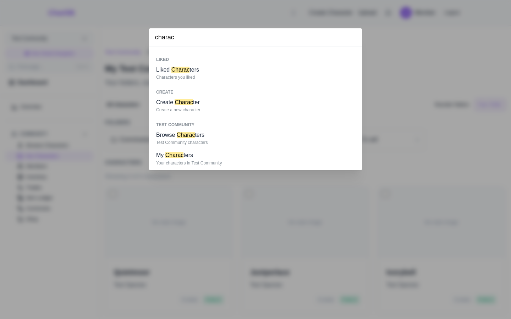

Finding Your Characters
Five lists of characters, and which one answers your question
Which List You Want
Characters are listed in five places. They differ by whose characters and where, and picking the wrong one is the usual reason a character seems to have gone missing.
- My Characters, in the global sidebar — everything you own, across every community.
- My Characters, in a community's sidebar — only the ones in that community.
- Browse Characters, in a community's sidebar — everyone's, in that community.
- All Characters, in the global sidebar — everyone's, everywhere.
- A member's characters page, from their profile — one person's, filtered to what you may see.
Everything You Own
My Characters in the global sidebar is your whole collection, whichever community each character belongs to. It is a folder browser: your folders across the top, and underneath them every character you have not filed into one.
If you have never made a folder, that is simply all of them — nothing is filed, so nothing has left the top level. See Character Folders.

Yours, In One Community
Inside a community, My Characters in the sidebar is the same workspace narrowed to that community. The same folders, the same filing — only the counting changes.
Folders belong to you rather than to a community, so one folder can hold characters from several. A folder holding nothing in the community you are looking at still appears, reporting zero, so you can file into it from in here.
Browse Characters, directly above it, is the other question: everyone's characters in this community, with search and filters over the lot.

Somebody Else's — And Yours, To Them
A member's profile has View All beside Recent Characters, and a clickable Characters tile in the stats row. Both reach a page of everything that member owns.
Their folders arrange it. This is what makes folders worth keeping tidy: it is the page other people meet your collection on. Folders the owner marked private are absent, along with anything nested inside them, and so is every character you are not allowed to see.
The top level here lists every character you may see, filed or not — unlike your own workspace, where the top level is the pile still to be filed. A visitor's list should be complete; an owner's should empty as they work.

Or Just Search
When you know the character but not where you filed it, do not browse. Ctrl+K searches pages — including each community's own character pages, named after the community — and the browse pages carry a search box over the characters themselves.
